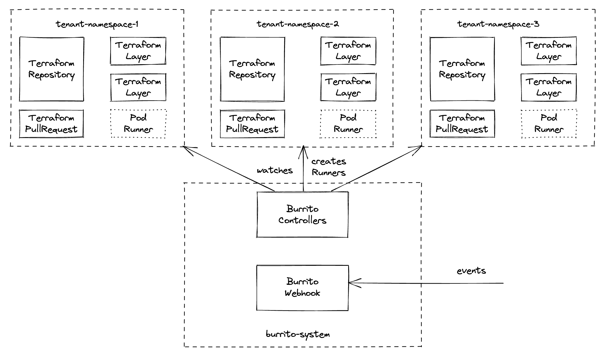

Multi-tenant architecture¶

With our Helm chart we provide a way to setup multi-tenancy with burrito. This is useful when working at scale, when you controls multiple Terraform projects with burrito across several teams.
The setup is split across multiple Kubernetes namespaces:
burrito-systemis where burrito's components live and operate (controllers, server, datastore)- the other namespaces (
tenant-namespace-[1-3]on the schema) whereTerraformRepository,TerraformLayer,TerraformRunandTerraformPullRequestresources live and where burrito spawns runner pods for Terraformplanandapplyactions.
Thanks to Kubernetes native RBAC system you can restrict access for your users only to the namespaces their burrito resources live.
Configuring multi-tenancy with the Helm chart¶
1. Configure basic tenants¶
In the values.yaml of the Helm chart, add the following:
tenants:
- namespace:
create: true
name: tenant-namespace-1
serviceAccounts:
- name: runner-project
- namespace:
create: true
name: tenant-namespace-2
serviceAccounts:
- name: runner-project
- namespace:
create: true
name: tenant-namespace-3
serviceAccounts:
- name: runner-project
This setup creates 3 tenants with 3 namespaces with one service account in each namespace.
The chart adds every tenant referenced in its values in the namespaces that the burrito controllers must watch.
You can also customize namespaces' labels and annotations:
tenants:
- namespace:
create: true
name: tenant-namespace-1
labels:
app.kubernetes.io/part-of: project-1
annotations:
helm.sh/resource-policy: keep
2. Configure service accounts¶
Each service account created in a tenant is bound to the burrito-runner ClusterRole, it is a basic role with the required permissions for a burrito runner pod to work properly.
You can add additional role bindings to the service accounts if you need special permissions in the cluster (e.g. a Terraform layer deploying to Kubernetes) as well as annotations and labels (e.g. assume a role on a cloud provider).
- namespace:
create: true
name: tenant-namespace-1
serviceAccounts:
- name: runner-kubernetes
additionalRoleBindings:
- name: custom
role:
kind: ClusterRole
name: custom-role
- name: runner-google
labels:
app.kubernetes.io/part-of: project-1
annotations:
iam.gke.io/gcp-service-account: burrito-project-1@company-project.iam.gserviceaccount.com
- name: runner-aws
annotations:
eks.amazonaws.com/role-arn: arn:aws:iam::111122223333:role/my-role
3. Use service accounts in the tenant¶
For the TerraformRepository or TerraformLayer you deploy in a tenant, you can use the overrideRunnerSpec parameter to select which service account to use for runners affected to a layer/repository.
apiVersion: config.terraform.padok.cloud/v1alpha1
kind: TerraformLayer
metadata:
name: infra-aws
namespace: tenant-namespace-1
spec:
terraform:
version: "1.5.3"
path: "infra/layers/aws/production"
branch: "main"
repository:
name: project-1
namespace: tenant-namespace-1
overrideRunnerSpec:
serviceAccountName: runner-aws # <-- Specify service account here